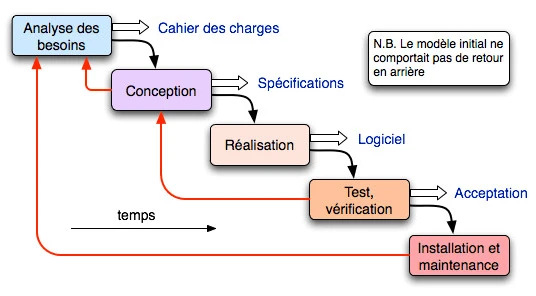

Introduction
This is a normal paragraph (p element). To add some length to it, let us mention that this page was primarily written for testing the effect of user style sheets. You can use it for various other purposes as well, like just checking how your browser displays various HTML elements by default. It can also be useful when testing conversions from HTML format to other formats, since some elements can go wrong then.
This is another paragraph. I think it needs to be added that the set of elements tested is not exhaustive in any sense. I have selected those elements for which it can make sense to write user style sheet rules, in my opionion.
This is a
div element. Authors may use such elements instead of paragraph markup for various reasons. (End of div.)This is a block quotation containing a single paragraph. Well, not quite, since this is not really quoted text, but I hope you understand the point. After all, this page does not use HTML markup very normally anyway.
The following contains address information about the author, in an address element.
Les grandes étapes du cycle de vie
This is a normal paragraph (p element). To add some length to it, let us mention that this page was primarily written for testing the effect of user style sheets. You can use it for various other purposes as well, like just checking how your browser displays various HTML elements by default. It can also be useful when testing conversions from HTML format to other formats, since some elements can go wrong then.
This is another paragraph. I think it needs to be added that the set of elements tested is not exhaustive in any sense. I have selected those elements for which it can make sense to write user style sheet rules, in my opionion.
This is a
div element. Authors may use such elements instead of paragraph markup for various reasons. (End of div.)This is a block quotation containing a single paragraph. Well, not quite, since this is not really quoted text, but I hope you understand the point. After all, this page does not use HTML markup very normally anyway.
The following contains address information about the author, in an address element.
Illustrations et cas pratiques
3.a Exemple concret du cycle de vie d’un site e-commerce
Après les phases de recherche de contenus (textes et visuels) puis l’élaboration d’un plan de site avec sa structure :
- Choisir un nom de domaine et un hébergeur de qualité
- Développement & Conception du site
- Phases de test en développement
- Mise en ligne du site
- Nouveaux tests après la mise en production du site
- Faire connaître son site dans les moteurs de recherche (SEO)
- Lier son site aux réseaux sociaux
- Actualiser son site, faire vivre son site, ajouter de nouveaux contenus régulièrement
- Faire la maintenance de son site : mises à jour techniques et suivi rigoureux
- Après deux ans, faire des évolutions sur son site Internet
- Mettre à jour les contenus, toujours travailler son référencement
- Après trois ans, faire une mise à jour majeure du site
- Après quatre ans, penser à la refonte du site Internet
- À 5 ans, un nouveau cycle de vie commence après la refonte
Cycle de vie d'un site e-commerce

3b. Les principaux écueils d’un cycle de vie mal maîtrisé
- Isoler un projet Web de la stratégie de l’entreprise le condamne à l’échec, car celui-ci est l’extension de la stratégie de l’entreprise.
- Un projet informatique est très souvent sous-estimé et dérive quasi systématiquement. C’est pourquoi il est indispensable de planifier la conception d’un vrai MVP (Minimum Viable Product) pour éprouver le cœur du projet. Cela permet par exemple d’éviter de développer de grandes fonctionnalités qui se révèlent être inutiles.
- Le manque de tests est un autre écueil en matière de développement. Ils sont souvent mis de côté en raison de contraintes de temps ou de budget. Selon une étude de Google, environ 60 % des utilisateurs supprimeront une application mobile ou quitteront un site web mobile après une seule expérience décevante.
- Il faut savoir terminer un projet : on peut être tenté de vouloir avoir le « site parfait » pour la mise en ligne. Pourtant, en faisant cela, on ne fait que retarder cette mise en ligne. Il vaut mieux phaser l’implémentation de nouvelles fonctionnalités et profiter d’une présence en ligne plus tôt.
- Une mauvaise communication entre les équipes de développement peut être préjudiciable : on peut ainsi assister au cloisonnement des équipes en charge des applications, du réseau et de la sécurité.
Conclusion
This is a normal paragraph (p element). To add some length to it, let us mention that this page was primarily written for testing the effect of user style sheets. You can use it for various other purposes as well, like just checking how your browser displays various HTML elements by default. It can also be useful when testing conversions from HTML format to other formats, since some elements can go wrong then.
This is another paragraph. I think it needs to be added that the set of elements tested is not exhaustive in any sense. I have selected those elements for which it can make sense to write user style sheet rules, in my opionion.
This is a
div element. Authors may use such elements instead of paragraph markup for various reasons. (End of div.)This is a block quotation containing a single paragraph. Well, not quite, since this is not really quoted text, but I hope you understand the point. After all, this page does not use HTML markup very normally anyway.
The following contains address information about the author, in an address element.